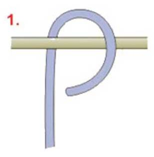
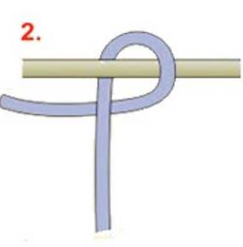
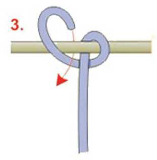
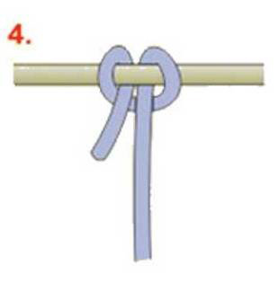

Ikatan jangkar. Gunanya untuk mengikat jangkar atau benda lainnya yang berbentuk ring.
Cara membuat Simpul Jangkar :
1. Lingkarkan ujung tali pada benda yang hendak ditali dari sebelah bawah benda(gambar 1)

2. Lintaskan ujung tali di belakang badan tali (gambar 2)

3. Lingkarkan ujung tali sekali lagi pada benda yang hendak ditali dari sebelah atas benda (gambar 3)

4. Selipkan ujung tali sehingga sama dan sejajar dengan badan tali (gambar 4)

5. Tarik kedua ujung tali sehingga simpul mengencang.